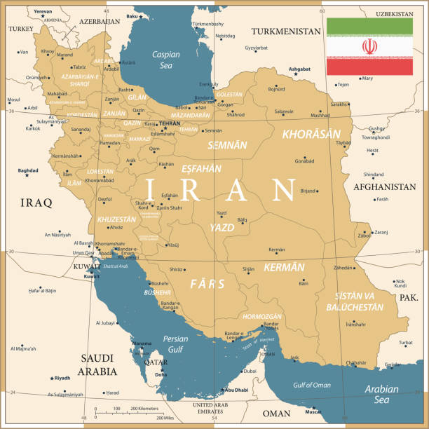

Introduction
The Iranian Revolution was a series of events that led to the overthrow of Shah Mohammad Reza Pahlavi in 1979 and the establishment of an Islamic Republic.
The revolution was driven by political dissatisfaction, economic inequality, religious leadership, and opposition to Western influence in Iran.
Before 1979, Iran was ruled by Shah Mohammad Reza Pahlavi. He launched a series of modernization reforms called the White Revolution in the 1960s. These reforms focused on land redistribution, women's voting rights, industrial expansion, and improved literacy.
While these reforms modernized parts of Iran, they also created deep social tensions. Wealth became concentrated among elites, rural populations felt displaced, and many religious leaders opposed the Shah’s Western-style policies.
The Shah ruled with strong support from Western nations, especially the United States. His regime relied heavily on SAVAK, the secret police, to suppress political opposition. Many activists, intellectuals, and religious scholars were imprisoned or silenced.
One of the strongest critics of the Shah was Ayatollah Ruhollah Khomeini, a religious leader who opposed Western influence and authoritarian rule. He was exiled in 1964 but continued spreading revolutionary messages from abroad.
By the late 1970s, economic struggles, political repression, and religious opposition had created widespread dissatisfaction across Iranian society.

Main Themes
- Political reform and resistance
- Religious leadership
- Public protest movements
- Transformation of governance